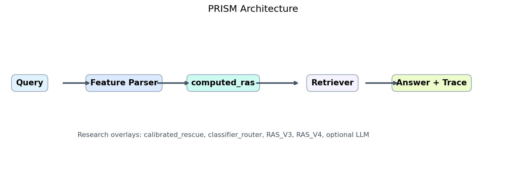
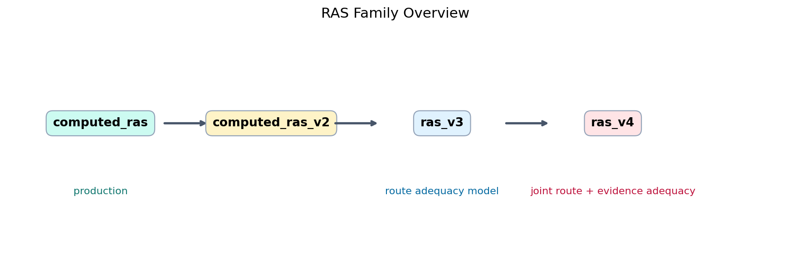
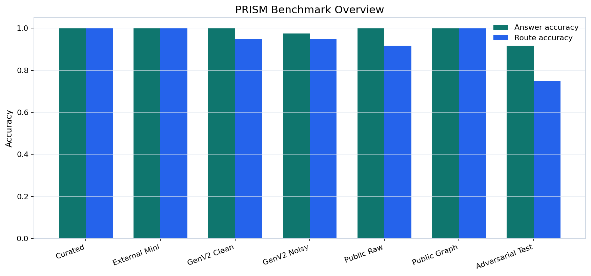
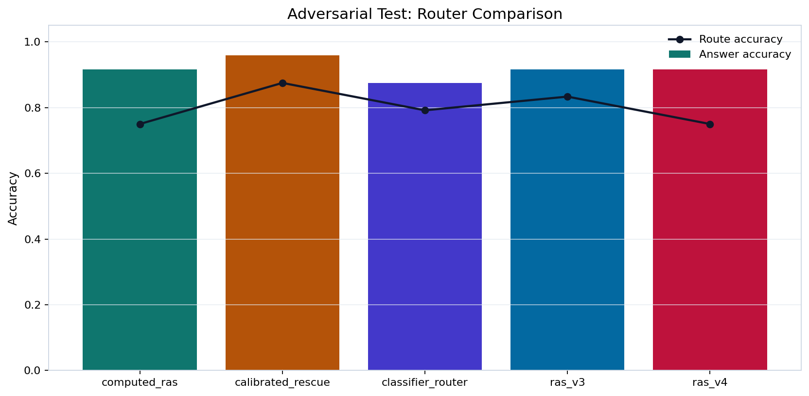
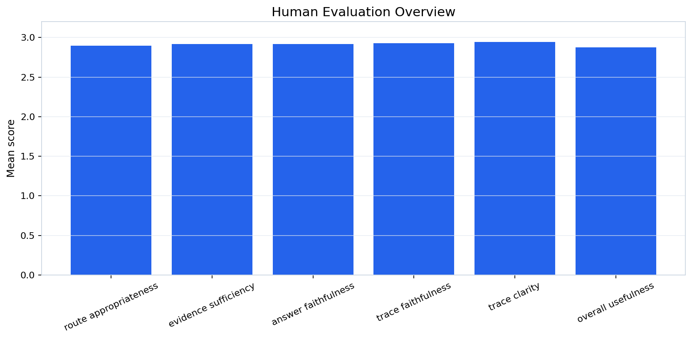

PRISM
Representation-aware retrieval routing for structural mismatch in question answering.
Contributions: Ritik - production integration, demo, report, release package. Omkar, Vaishnavi, and Moin - TBD by teammates.
One retriever cannot preserve every kind of structure.
Lexical
Exact identifiers such as RFC numbers and codes need sparse matching.
Semantic
Conceptual paraphrases need dense similarity.
Deductive
Class, property, and membership questions need graph structure.
PRISM turns representation choice into an explicit reasoning step.
Motivating example: RFC identifiers, climate-anxiety paraphrases, and mammal capability questions require different representations.
Structural mismatch is a representation adequacy problem.
1. Query
Feature signals identify lexical, semantic, deductive, or relational needs.
2. Route
RAS scores BM25, Dense, KG, and Hybrid.
3. Evidence
The selected backend retrieves provenance-bearing support.
4. Answer
The final response cites evidence and exposes a reasoning trace.
Reasoning process: represent the query need, choose the adequate representation, retrieve evidence, and justify the answer with a trace.
Architecture and RAS family

computed_ras is the production router. RAS_V3 and RAS_V4 formalize route adequacy and route-plus-evidence adequacy as research models.

Strong on stable layers, honest on hard cases.


Curated end-to-end benchmark
computed_ras adversarial test answer accuracy
calibrated rescue adversarial test answer accuracy
Finding: representation-aware routing is stable on standard layers; adversarial ambiguity shows evidence rescue is complementary.
Every answer is tied to route scores, evidence, and trace.
- Demo path: `Executive Summary` -> `Guided Demo` -> `Demo / Query`.
- Canonical queries cover lexical, semantic, deductive, and relational retrieval.
- The UI exposes parsed features, route scores, selected backend, evidence ids, and answer trace.

Takeaways, contributions, and limitations
Main contribution
Explicit routing across BM25, Dense, KG, and Hybrid based on representation adequacy.
Main result
Stable performance on curated, external, generalization, public raw, and public graph layers.
Main limitation
Adversarial boundary cases still need evidence rescue and better uncertainty handling.
Ritik
Production integration, routing/demo stability, final report, release package, presentation deliverables.
Omkar
TBD by teammate.
Vaishnavi
TBD by teammate.
Moin
TBD by teammate.
Rubric alignment
Problem, KRR approach, reasoning process, results, contribution, and timing are mapped to the slide flow.
Production remains computed_ras. PRISM is bounded source-pack/local/open-corpus QA, not web-scale search.